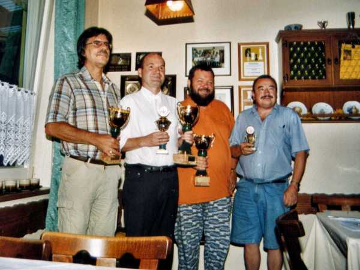
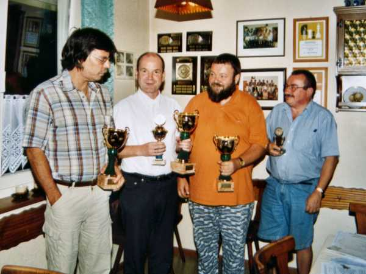
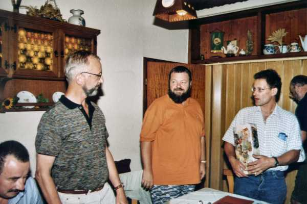

JHV 2003

Die strahlenden Sieger bei der Vereinsmeisterschaft und beim Sommerpokal:
Scheina, Bürgin, Bahner und Kohlhöfer

Ganz schöne Pötte gab es dieses Jahr.

Andreas Grabow wird beim Ausscheiden als Kassier vom Vorstand gedankt.